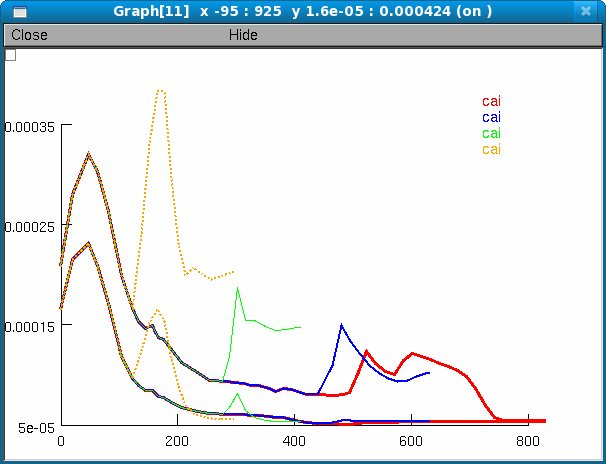

This is the readme for a model used in the paper Morse TM, Carnevale NT, Mutalik PG, Migliore M, Shepherd GM (2010) Abnormal excitability of oblique dendrites implicated in early Alzheimer's: a computational study Front. Neural Circuits 4:16 The model code was contributed by Tom Morse. It was created (see paper for details) from earlier models (especially Migliore et al. 2005 and calcium channels from Hemond et al. 2008) with modifications and additions by Tom Morse and Ted Carnevale with interaction with the other authors. It requires the NEURON simulator to be installed (available at http://www.neuron.yale.edu). To recreate figures from the paper, start the simulator by auto-launching from ModelDB *OR* Under unix systems: ------------------- In the expanded archive's folder compile the mod files using the command "nrnivmodl" run the simulation with the command "nrngui mosinit.hoc" Under Windows systems: ---------------------- Compile the mod files using the "mknrndll" program. A double click on the simulation file mosinit.hoc will open the simulation window. Under MAC OS X: --------------- drag and drop the expanded archive's folder onto the mknrndll icon. drag and drop the mosinit.hoc file onto the nrngui icon. Once the simulation is started click on a button to recreate a figure from the paper, e.g.: Figure 1,2 generates Figure 1B and 2 simultaneously: (the simulation part is Figure 1B right hand side traces): Figure 2: Figure 3 (example): Figure 4: Figure 5: Figure 6b:  Questions on how to use this model should be directed to tom.morse @ yale.edu. References Chen C (2005) beta-Amyloid increases dendritic Ca2+ influx by inhibiting the A-type K+ current in hippocampal CA1 pyramidal neurons. Biochem Biophys Res Commun 338:1913-9 Migliore M, Ferrante M, Ascoli GA (2005) Signal propagation in oblique dendrites of CA1 pyramidal cells. J Neurophysiol 94:4145-4155 [Model] Hemond P, Epstein D, Boley A, Migliore M, Ascoli GA, Jaffe DB (2008) Distinct classes of pyramidal cells exhibit mutually exclusive firing patterns in hippocampal area CA3b Hippocampus 18(4):411-24 [Model]